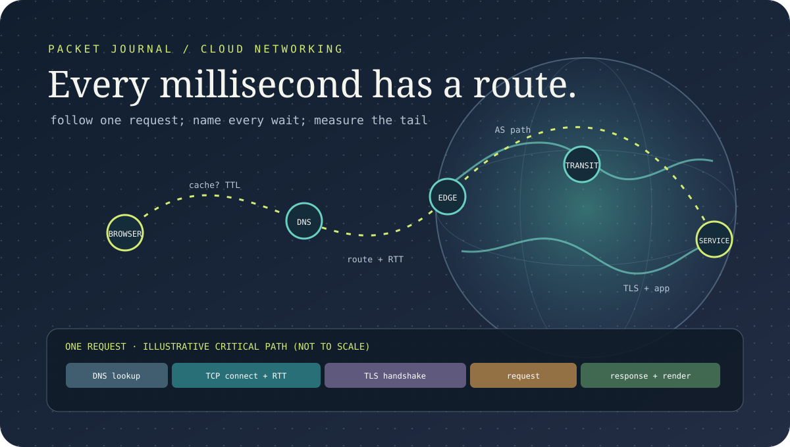

Delegation, zones, resolvers, and caching foundations.
Free packet journal12 lessonsTrace cards + latency budgetsMarta
Cloud Networking: Every Millisecond Has a Route
A request does not “go to the cloud.” It crosses caches, resolvers, routes, handshakes, proxies, and application queues. This field guide follows the packet one boundary at a time, measures what each boundary adds, and refuses to hide a tail behind an average.
Measurement method: each lesson has a packet diary—start condition, timestamp, observation, competing explanation, next measurement. Latency examples are labeled as illustrative budgets, not benchmark claims.
By Marta · Performance desk · 8-hour guided estimate · Updated October 10, 2026

LocateWhich boundary owns the wait?
MeasureWhich clock and percentile?
ChangeWhat will the next trace prove?
After these lessons, you can
- Trace DNS, routing, transport, TLS, balancing, NAT, and application timing without collapsing them into “network latency.”
- Explain connection reuse, TCP’s ordered byte stream, handshake costs, and the limits of 0-RTT.
- Place deadlines and retries across a call graph, and spot routes that cross failure boundaries.
- Build a network investigation from flow, resolver, and application telemetry rather than a single ping.
Protocol summaries link to IETF standards; operational choices reference AWS design guidance. Cloud-provider behavior is not interchangeable, so verify the service-specific details in your environment.
01 · Trace card · The complete path
“The network is slow” is not a measurement
Open a page with a warm connection and cached DNS; open it again with a cold resolver and a new TLS session. The visible request may be identical. The critical path is not. Separate name lookup, connect, secure handshake, server wait, response transfer, and browser work before optimizing any one of them.
Sketch the actual topology: client, recursive resolver, authoritative DNS, CDN or edge, transit, load balancer, service, and dependencies. Mark who owns each hop, whether it is a cache, and which clocks observe it. Client timing alone cannot tell you whether a request waited in a resolver, route, handshake, or server queue.
DNScache / lookup
TCPconnect RTT
TLSsecure channel
APPqueue + work
BODYtransfer + parse
Packet diary: record cold and warm connection paths separately. State which browser or client timing mark starts the clock.
IETF · TCP specification02 · Resolver diary · DNS
DNS is delegation plus cache policy
A stub resolver asks for a name; a recursive resolver may answer from cache or walk referrals toward authoritative servers. The hierarchy distributes ownership so no single machine needs the full live database. TTL is a cache lifetime assigned to records, not a command that instantly flushes every cache the moment an address changes.
That lag matters during failover. Lowering a TTL shortly before a planned cutover may not change copies already cached under the previous TTL. Client behavior, resolver policy, negative caching, and connection reuse all affect how quickly a new address is used. Keep DNS change procedures explicit, and do not use DNS alone as a health check for every active connection.
Trace question: Was the response authoritative or cached? Which resolver answered? What TTL remained, and did the client open a fresh connection after resolution?
IETF · RFC 1034, DNS conceptsIETF · RFC 1035, DNS implementation03 · Route notebook · BGP
BGP advertises reachability; it does not promise the shortest trip
BGP exchanges network reachability between autonomous systems, along with path attributes that support routing policy and loop avoidance. The route a packet takes reflects policy and available advertisements, not a universal shortest-latency calculation. A route withdrawal, misconfiguration, or slow convergence can change where traffic flows even when the application and DNS records did not change.
Anycast places the same address in multiple locations and lets routing steer clients toward an advertised instance. That can improve reach and absorb traffic, but “nearest” means nearest according to routing policy, not necessarily geographic distance or lowest application latency. Measure from multiple vantage points and distinguish path changes from origin changes.
Trace question: Compare traceroutes, route collectors, and application latency around a path change. Is the new route shorter in network terms and faster for the user?
IETF · RFC 4271, BGP-404 · RTT sketch · TCP
TCP gives an ordered byte stream, not one request per packet
TCP tracks sequence numbers, acknowledgments, retransmission, receive windows, and connection state. Applications see a reliable ordered stream, not packet boundaries. A request can wait on connection setup, congestion control, loss recovery, flow control, or application scheduling. A successful ping says little about the fate of a long-lived congested connection.
Connection reuse avoids repeatedly paying setup costs, while very long-lived connections introduce their own health and balancing questions. Bandwidth-delay product is a useful capacity lens: in-flight data needed to fill a path grows with bandwidth and round-trip time. A high-bandwidth, high-latency path can underperform when its window or congestion behavior limits data in flight.
Measurement: compare reused versus new connections and record handshake time, retransmits, bytes in flight, and p95—not just average RTT.
IETF · RFC 9293, TCP05 · Handshake clock · TLS
TLS protects the channel; resumption changes the timing
TLS authenticates the server, negotiates cryptographic parameters, and protects application data for confidentiality and integrity. A full handshake has an exchange before ordinary application data; session resumption can reduce setup work. The actual latency depends on protocol version, key exchange, client state, network RTT, and implementation.
TLS 1.3 early data (0-RTT) has weaker replay properties than ordinary post-handshake data. Do not put a non-idempotent action such as “charge this card” into an early-data path without an application-level replay design. Security and latency are coupled: faster is not a free protocol option.
Measurement: split new full handshakes, resumed handshakes, and reused established connections. Do not average them into one “TLS cost.”
IETF · RFC 9846, TLS 1.306 · Boundary map · Load balancing
A load balancer is a stateful hop in the request path
Layer-4 balancing routes connections using transport information; layer-7 balancing can route requests using application details such as host or path. Health checks only observe the signal they are configured to observe. A process can return “healthy” while its database pool is exhausted; an aggressive check can eject a slow but recoverable target and push traffic onto fewer servers.
Connection draining, idle timeouts, keep-alive behavior, client affinity, and cross-zone policy all affect how traffic moves during deployment or failure. Map the listener, target group, health semantics, and deregistration delay. Model enough surviving capacity for a zone loss instead of assuming that the balancer creates capacity during the incident.
Trace question: Did the request reach the intended target? What did the health check test, and how many healthy targets remained at the same timestamp?
AWS · Application Load Balancer overviewAWS · Static stability07 · Flow ledger · NAT
Outbound traffic consumes address and connection state
Private workloads often leave through a NAT device or egress proxy. That component tracks flows and translates addresses; it is a data-plane dependency, not an invisible checkbox. Many short-lived connections, concentrated destinations, or exhausted port/connection state can turn a dependency slowdown into broad egress failure. The exact limits and scaling behavior are provider-specific.
Measure active connections, connection-creation rate, errors, destination concentration, and per-zone egress. Reuse connections where safe, bound concurrency, and spread capacity according to the failure domain. A single shared egress point may simplify routing while creating a common blast radius and a cross-zone cost path.
Measurement: correlate application connect errors with NAT metrics and destination tuples. A high outbound byte count alone will not reveal port pressure.
AWS · NAT gateway troubleshootingAWS · Zonal NAT and failure isolation08 · Deadline ledger · Retries
One user deadline must survive every hop
If an incoming request has 700 ms left and spends 250 ms in the first service, the next hop does not own a fresh 700 ms. Propagate the remaining deadline, reserve response time, and stop work when nobody can use the result. Nested retries multiply traffic and latency; every retry policy must fit inside the caller’s budget.
Use backoff and jitter to reduce synchronized bursts, but only retry an operation whose semantics allow it. A timeout can leave the operation’s outcome unknown. Idempotency keys, bounded retries, and a reconciliation endpoint resolve that ambiguity better than “try again until it works.” Load shedding and stale-but-safe responses can protect a dependency during a brownout.
Measurement: put the absolute deadline and attempt number in traces. Count original requests separately from retry attempts.
AWS · Timeouts and retry budgetsAWS · Idempotent APIs09 · Packet-size check · MTU
Small packets pass while large responses disappear
Path MTU is the largest packet that can travel a path without fragmentation at a lower layer. Tunnels add headers and reduce usable payload size. When MTU discovery or ICMP signaling fails in the path, small requests can succeed while larger transfers stall—a gray failure that a simple health check may miss.
Record interface MTU, encapsulation overhead, TCP MSS behavior, and whether needed control messages are filtered. Test a range of payload sizes and long transfers through the real route, including VPN and service-mesh overlays. A smaller ping that works is not proof that the production response body can pass.
Measurement: vary packet size while holding endpoint and route constant. Compare retransmissions, stalls, and error counters before changing a global MTU.
IETF · RFC 4821, TCP PLPMTUDIETF · RFC 8899, Datagram PLPMTUD10 · Zone map · Failure domains
Keep the recovery path inside the boundary
Availability zones are useful only when dependencies respect the boundary. A service fleet may span three zones while all outbound traffic, DNS control, or storage traffic depends on a single zonal component. Cross-zone calls can also turn one zone impairment into a multi-hop probability problem: every dependency adds another place for the impaired zone to appear.
AWS’s static-stability guidance describes pre-provisioning sufficient capacity and keeping data-plane flows zonal for foundational components such as NAT. The principle generalizes: isolate a failure in place, retain enough healthy capacity, and avoid a failover plan that requires a just-in-time control-plane action during the event. The cost and operational complexity are real; state both.
Review: draw a route table from each workload subnet. Which critical-path flows leave the zone, and what still serves users after one zone is impaired?
AWS · Static stability using Availability Zones11 · Instrument panel · Observability
Measure the phase, path, and tail together
Record DNS duration and answer source, connection reuse, TCP connect, TLS handshake, server time-to-first-byte, response transfer, and total duration. Attach route or region labels where available. Keep histograms by endpoint and connection class; a p50 can improve while a p99 regresses for clients on a specific path.
Distributed traces show application spans but do not automatically reveal network route changes. Flow logs, resolver telemetry, load-balancer metrics, retransmit counters, and packet captures each have a different view and privacy/cost profile. Correlate their clocks and sampling policies before joining them. A missing span is not proof that no packet waited.
Packet diary template: timestamp + source/target + connection state + RTT/phase + result + confidence. Record the observation that would disprove your current hypothesis.
AWS · Operational visibility and latency percentiles12 · Capstone · Measured route design
Trace one cold request and one warm request
Take a small web service deployed across two zones behind a managed load balancer, with private egress and an edge cache. Produce two traces: a cold user arriving without DNS or connection state, and a warm user reusing DNS and a secure connection. Set a total latency objective, assign a budget to each measured phase, and note which budgets are outside your control.
Then remove one zone from service. Show where traffic routes, which egress path remains, whether connection draining helps, how the client discovers a new address, and which retries fit within the same deadline. The final artifact is a topology, a latency waterfall, a failure matrix, and one experiment that can confirm the largest remaining uncertainty.
Review gate: explain the slowest phase at p95, one failure mode invisible to a health check, and one change whose success can be tested from a client trace.
Continue with Web Performance Economics for user-facing performance and SRE and Observability for alerting the service contract.
Research shelf · standards and engineering guidance
DNS message format and protocol behavior.
Reachability exchange and path attributes.
Modern consolidated TCP specification.
Current TLS 1.3 handshake, resumption, and early-data security considerations.
Pre-provisioning and failure-domain independence in the data path.
Timeout selection, jitter, and bounded retries.
Path MTU discovery at the packetization layer.
Diagrams show conceptual paths rather than a live traceroute. Latency allocations are teaching devices, not measured Buildopsy or provider benchmarks. Provider limits and routing behavior vary by service and region.